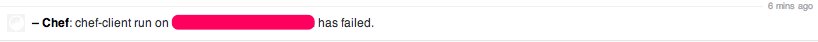

Chef report handler for grove.io
Overview
A simple handler which logs chef run reports into a grove.io channel via the webhook.

Installation
gem install chef-groveio-handler
Setup
In your client.rb add something like
# Notify admins via IRC when a Chef run fails
require 'chef-groveio-handler'
# retrieve hash from https://grove.io/organizations/:org/:channel/services
channel_hash = "thehashhere"
groveio_handler = ChefGroveIOHandler.new(channel_hash)
exception_handlers << groveio_handler